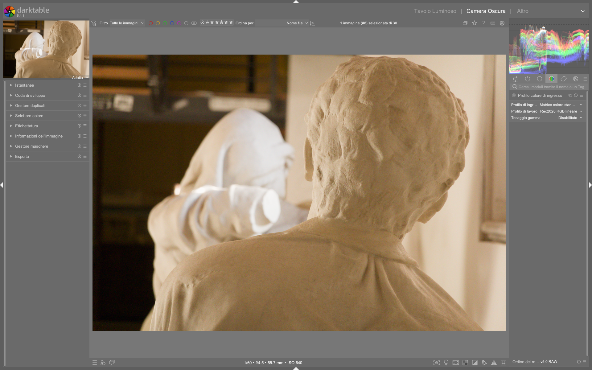

Input Color Profile¶
Il modulo input color profile definisce come darktable interpreterà i dati cromatici dell’immagine in ingresso, convertendoli dallo spazio colore nativo della sorgente (fotocamera, scanner, file JPEG/TIFF) a uno spazio colore di lavoro standardizzato. È il primo modulo obbligatorio nella pipeline di elaborazione RAW e agisce prima di qualsiasi regolazione espositiva o cromatica — un errore qui compromette irreversibilmente tutti i passaggi successivi1.
Posizione critica nella pipeline
Il modulo input color profile si trova subito dopo raw black/white point e prima di white balance, nel flusso scene-referred. Non è modificabile per immagini RAW: se disabilitato, appare grigio e bloccato nella pipeline2. Questa posizione garantisce che la mappatura colore avvenga sui dati grezzi, non su valori già bilanciati o esposti1.
Panoramica¶
Il modulo svolge tre funzioni fondamentali:
- Mappatura del colore da sensore — applica una matrice colore specifica per il modello di fotocamera (es.
enhanced matrixper Fujifilm X-T2) o usa una matrice standard quando non disponibile1. - Gestione profili ICC embedded — riconosce e applica automaticamente i profili ICC inclusi in file JPEG, TIFF o DNG1. Se presente, il tooltip sul menù a tendina mostra i dettagli del profilo (nome, versione, intento).
- Controllo del gamut — limita i colori fuori gamma tramite gamut clipping, prevenendo artefatti come pixel neri in aree di blu saturi (es. cieli al tramonto con luci LED)1.
A differenza di Lightroom, darktable non “assume” uno spazio colore di ingresso: ogni RAW viene trattato con una matrice calibrata per quel sensore, garantendo coerenza tra modelli diversi4. Per immagini non-RAW (JPEG), il modulo è invece opzionale e può essere bypassato.
Flusso di lavoro consigliato¶
Il flusso ottimale è semplice ma rigido:
1. raw black/white point (automatico)
|
2. input color profile (automatico — non toccare)
|
3. white balance (regolazione manuale o auto)
Non modificare mai input color profile su RAW
Per file RAW, lascia sempre input profile impostato su camera default o enhanced matrix (se disponibile per la tua fotocamera). Modificarlo manualmente introduce errori di mappatura cromatica difficili da diagnosticare, specialmente con colori neutri e pelle21.
Passo 1: Verifica del profilo automatico¶
All’apertura di un RAW:
- Controlla che il menù input profile mostri una voce specifica per la tua fotocamera (es. Fujifilm X-T2 enhanced matrix) anziché generic matrix.
- Se vedi embedded icc profile, significa che l’immagine non è RAW ma JPEG/TIFF/DNG con profilo incorporato1.
- Usa il tooltip (passa il mouse sul menù) per verificare i dettagli: nome del profilo, gamma, intento di rendering1.
Passo 2: Profilo personalizzato (solo per casi avanzati)¶
Puoi fornire un profilo ICC personalizzato solo se:
- Hai generato un profilo con uno strumento esterno (es. Argyll CMS, DisplayCAL)
- Lo hai salvato nella cartella $HOME/.config/darktable/color/in/ (creala manualmente se assente)1
- Hai attivato il modulo unbreak input profile per abilitarne l’uso1
Profilazione custom = rischio alto
I profili personalizzati richiedono calibrazione precisa del sensore. Un ICC errato causa shift cromatici sistematici (es. rossi che diventano arancioni, verdi che virano gialli) e non è recuperabile nei moduli successivi1.
Parametri principali¶
| Parametro | Range / Opzioni | Default | Descrizione |
|---|---|---|---|
| input profile | camera default, enhanced matrix, generic matrix, embedded icc profile, linear Rec. 2020 RGB, Adobe RGB (compatible), sRGB, linear Rec. 709 RGB |
camera default (per RAW)embedded icc profile (per JPEG) |
Seleziona la matrice o il profilo da applicare. Le voci enhanced matrix sono disponibili solo per alcuni modelli (Sony ARW, Fujifilm RAF, Canon CR3)13. |
| working profile | linear Rec. 2020 RGB, Adobe RGB (compatible), sRGB, linear Rec. 709 RGB, ACEScg |
linear Rec. 2020 RGB |
Spazio colore interno usato dai moduli successivi. linear Rec. 2020 RGB è raccomandato per workflow scene-referred: offre il più ampio gamut senza clipping prematuro1. |
| gamut clipping | off, on |
off |
Attiva il meccanismo di taglio dei colori fuori gamma. Abilitalo solo se compaiono artefatti visibili (pixel neri isolati in zone di blu intenso o luci LED)1. |
Gamut Clipping: quando e come usarlo¶
Il clipping è un intervento di emergenza, non una regolazione standard:
- Attivalo solo se:
- L’immagine mostra pixel neri isolati in aree di blu saturo (es. cielo notturno con luci LED, neon blu)
- L’istogramma RGB mostra picchi estremi su blu senza corrispondenti valori in rosso/verde
-
Il problema persiste anche dopo aver regolato
white balanceecolor calibration1 -
Scegli il working profile in base al clipping:
| Profilo | Gamut | Quando usarlo |
|---------|--------|----------------|
|linear Rec. 2020 RGB| Più ampio | Default per RAW — minimo clipping naturale1 |
|Adobe RGB (compatible)| Medio | SeRec. 2020genera artefatti masRGBè troppo stretto |
|sRGB| Più stretto | Solo per output web finale — evita in fase di editing1 |
Test rapido con maschera
Per identificare i pixel fuori gamut: attiva la visualizzazione della maschera (M), seleziona gamut clipping nel menù contestuale e osserva le aree in rosso scuro. Se non compaiono, il clipping non è necessario1.
Interazione con altri moduli¶
input color profile influenza direttamente:
white balance: lavora sui dati già mappati. Una matrice errata qui rende impossibile un bilanciamento preciso del bianco2.color calibration: riceve dati già convertiti nelworking profile. Se il working profile èsRGB, la calibrazione avrà meno margine per manipolare i primari1.AGX/Filmic RGB: dipendono dalla linearità e dall’accuratezza della mappatura iniziale. Un input profile scorretto causa under/over-saturazione sistematica, specialmente nei rossi e nei blu6.
Consigli pratici per migranti da Lightroom¶
| Problema Lightroom | Soluzione darktable | Riferimento |
|---|---|---|
| “I colori non corrispondono all’anteprima della fotocamera” | Usa enhanced matrix invece di generic matrix. Verifica che il modello sia supportato nella lista ufficiale3 |
1 |
| “Le immagini JPEG sembrano sbiadite” | Imposta input profile su embedded icc profile e working profile su linear Rec. 2020 RGB — non usare sRGB come working1 |
1 |
| “Il bianco non è neutro anche con WB corretto” | Controlla che input profile non sia impostato su sRGB o linear Rec. 709 RGB — questi profilano per display, non per editing1 |
1 |
| “Voglio replicare il look della fotocamera” | Usa enhanced matrix + color calibration con tab colorfulness e adaptation = none4 |
4 |
Esempio: Calibrazione del bianco per fotocamera specifica¶
Da [ENG] darktable Full edit #1 (timestamp 02:00–06:20)6
1. Scatta un’immagine RAW a un foglio bianco illuminato in luce diffusa (D50)
2. Importa l’immagine in darktable e apri il modulo white balance
3. Usa il color picker per selezionare un’area neutra: i coefficienti mostrati saranno red = 2.009, green = 1.000, blue = 1.450 (valori tipici per Fujifilm GFX100s)6
4. Clicca su + per creare un nuovo preset, rinominalo con il modello (es. GFX100s) e abilita only show this preset for matching images6
5. Applica il preset a tutte le immagini dello stesso modello: verrà caricato automaticamente in white balance dopo input color profile, garantendo coerenza6
Esempio: Gestione di immagini JPEG con profilo incorporato¶
Da [ENG] Lowlight photos in darktable (timestamp 00:30–01:40)8
1. Apri un file JPEG con profilo ICC incorporato (es. sRGB IEC61966-2.1)
2. Verifica che input profile mostri embedded icc profile: il tooltip confermerà sRGB, intent = perceptual8
3. Imposta working profile su linear Rec. 2020 RGB — non su sRGB — per preservare la dinamica cromatica durante l’editing8
4. Regola exposure e AGX in modo lineare: l’output rimarrà coerente anche se il JPEG originale era compresso8
Esempio: Ripristino di un RAW con matrice errata¶
Da [ENG] Full b&w edits in darktable for street photography (timestamp 02:05–04:50)9
1. Se un’immagine RAW mostra dominanti cromatiche irrecuperabili (es. verde oliva su pelle), controlla input profile: se è generic matrix, sostituiscilo con enhanced matrix (disponibile per Olympus E-M5)9
2. Dopo il cambio, white balance e color calibration riprenderanno a funzionare correttamente: i valori temperature = 4346 K, tint = 1.000 diventeranno stabili9
3. La correzione non richiede reset dei moduli successivi: i valori di color calibration → adaptation = CAT16 e gamut compression = 1.00 restano validi9
Domande frequenti¶
Problema: “Il modulo input color profile è disabilitato e non posso cambiarlo”¶
Questo comportamento è normale per file RAW: darktable impone una matrice specifica per garantire coerenza fisica. Il modulo è bloccato per prevenire errori irreversibili nella pipeline scene-referred1.
Problema: “Ho importato un profilo ICC personalizzato ma non appare nel menù”¶
Verifica che il file .icc sia stato copiato in $HOME/.config/darktable/color/in/ (non in /usr/share/darktable/color/in/) e che il modulo unbreak input profile sia attivo e posizionato prima di input color profile nella pipeline1.
Problema: “L’immagine RAW sembra ‘piatta’ dopo l’apertura”¶
È atteso: input color profile converte i dati in uno spazio lineare (linear Rec. 2020 RGB) senza correzione tonale. Il contrasto e la saturazione verranno aggiunti successivamente da filmic rgb, AGX o tone curve7.
Tabella preset built-in¶
| Preset | Quando usarlo | Note |
|---|---|---|
camera default |
Tutti i RAW — valore predefinito per ogni modello | Usa la matrice più recente disponibile per il sensore1 |
enhanced matrix |
RAW di fotocamere con supporto esplicito (Fujifilm X-T2/X-H2, Sony A7 IV, Canon R5) | Migliora la resa dei primari rispetto a camera default; richiede firmware aggiornato3 |
linear Rec. 2020 RGB |
Workflow scene-referred avanzato (es. HDR, color grading) | Gamut più ampio; richiede filmic rgb o AGX per la conversione finale1 |
embedded icc profile |
JPEG/TIFF/DNG con profilo incorporato | Il tooltip mostra intent = perceptual o relative colorimetric1 |
Riferimenti visuali¶

{kind=link}
Risorse aggiuntive¶
- Manuale ufficiale darktable — Input Color Profile1
- Video tutorial: “The darktable pipeline for beginners” — spiegazione visiva della posizione del modulo nella pipeline2
- Video tutorial: “darktable 3.8 What is new?” — introduzione al supporto CR3 e alle enhanced matrices3
- Video tutorial: “Some Color calibration ideas” — dimostrazione pratica dell’effetto di una matrice errata sul verde dello sfondo5
Fonti¶
-
darktable user manual — input color profile, https://docs.darktable.org/usermanual/development/en/module-reference/processing-modules/input-color-profile/ ↩↩↩↩↩↩↩↩↩↩↩↩↩↩↩↩↩↩↩↩↩↩↩↩↩↩↩↩↩↩
-
[ENG] The darktable pipeline for beginners, https://www.youtube.com/watch?v=1nPW6WPhhTo ↩↩↩↩
-
[ENG] darktable 3.8 What is new?, https://www.youtube.com/watch?v=5smugZ5pXN0 ↩↩↩↩
-
[ENG] New Release: darktable 5.2, https://www.youtube.com/watch?v=YcLJMaDbfRA ↩↩↩
-
[ENG] Some Color calibration ideas, https://www.youtube.com/watch?v=MJJR8DJ3rr8 ↩
-
[ENG] darktable Full edit #1, https://www.youtube.com/watch?v=DzdGL30lYjU ↩↩↩↩↩
-
PIXLS.US — Darktable 3:RGB or Lab? Which Modules? Help!, https://pixls.us/articles/darktable-3-rgb-or-lab-which-modules-help/ ↩
-
[ENG] Lowlight photos in darktable, https://www.youtube.com/watch?v=O7wXgmQZqiU ↩↩↩↩
-
[ENG] Full b&w edits in darktable for street photography, https://www.youtube.com/watch?v=f9szYMJ9wYo ↩↩↩↩